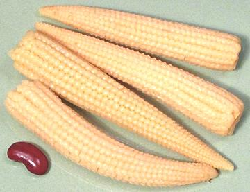

Baby Corn

[Khao-pote Onn (Thai); Sali Orn (Laos); Zea mays]
These very immature whole cobs of corn are quite popular in Southeast Asia. They are usually grown on a variety of corn that produces a larger number of small ears rather than a couple of large ears. They are hand harvested within 3 days of the silks appearing on the cob, and hand shucked.
Baby corn is easily available canned in North America, nearly all coming from Thailand. Fresh baby corn is often used in Thailand, but is not commonly available in North America due to the amount of hand labor involved. Baby Corn has a lightly crunchy texture and is only a little sweet, but it has a definite corn flavor. Its main contributions to a recipe are texture and appearance. The largest of the photo specimens was 3-3/4 inches long and 3/4 inch diameter at the base.
More on Corn.
|
Buying & Storing: This is now a very popular product in North America and can be found even in most supermarkets, at least it can here in Southern California. It should definitely be found in any market serving a Southeast Asian community. Though canned, it tends to darken and lose its fresh color and flavor fairly rapidly, so it should be used within a year. Cooking: This product requires no cooking, so it can be added to soups in the last minutes or to salads right from the can. On the other hand, it is not harmed by a bit of cooking. Baby corn is often used whole or cut into just a few pieces. It is used in soups, stews, curries and stir fries. |